Redis：从入门到框架整合
一、简介
Redis 是一个开源（BSD许可）的，内存中的数据结构存储系统，它可以用作数据库、缓存和消息中间件。 它支持多种类型的数据结构，如 字符串（strings）， 散列（hashes）， 列表（lists）， 集合（sets）， 有序集合（sorted sets） 与范围查询， bitmaps， hyperloglogs 和 地理空间（geospatial） 索引半径查询。 Redis 内置了 复制（replication），LUA脚本（Lua scripting）， LRU驱动事件（LRU eviction），事务（transactions） 和不同级别的 磁盘持久化（persistence）， 并通过 Redis哨兵（Sentinel）和自动 分区（Cluster）提供高可用性（high availability）。
官网：https://redis.io/ 中文官网：http://www.redis.cn/ 交互式教程（英文）：http://try.redis.io/
二、安装
安装前需要注意的：
- 中文官网上的非最新版本
- 官网只提供源码包下载
- 官方推荐在Linux系统上安装使用，具体方法参考上一篇文章
所以这里简单说明一下如何在Windows系统上安装。因为在Windows系统上使用要编译生成exe文件，需要微软Visual Studio那一套工具，还有Windows SDK，操作较为麻烦，所以这里分享两个已经编译好的Redis for Windows。选择其一即可
一个是微软提供的（版本较老，已经很久没更新了）：Redis 3.2.1。另一个是：Redis 5.0.9
下载zip解压缩或msi安装，exe文件双击执行，pdb文件用于调试
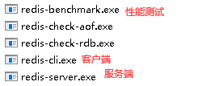
要附加参数的话使用cmd执行，例如redis-server.exe redis.windows.conf指定配置文件
想要后台运行的话可以安装成服务：
- 安装服务：
redis-server --service-install redis.windows.conf - 卸载服务：
redis-server --service-uninstall - 启动服务：
redis-server --service-start - 关闭服务：
redis-server --service-stop
三、基础
Redis默认有16个数据库，初始使用第0个数据库，在配置文件中可以找到相关说明
# Set the number of databases. The default database is DB 0, you can select
# a different one on a per-connection basis using SELECTwhere
# dbid is a number between 0 and ‘databases’-1
databases 16
Redis的基本数据类型有五种：string（字符串），hash（哈希），list（列表），set（集合）及zset(sorted set：有序集合)
扩展数据类型三种：bitmap（位图），hyperloglog（基数统计）和geospatial（地理空间）
1、库相关命令
切换数据库：select dbid（dbid为数据库下标，从0开始到库数量-1）
查看当前数据库keys的数量：dbsize
清空当前数据库的数据：flushdb
清空所有数据库的数据：flushall
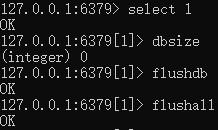
2、基本操作
| 命令 | 说明 |
|---|---|
SET key value |
设置一个key的string值 |
GET key |
返回key的string值 |
RENAME key newkey |
重命名key。如果key与newkey相同，将返回一个错误。如果newkey已经存在，则值将被覆盖 |
KEYS pattern |
查找所有符合给定模式pattern（正则表达式）的 key，例如keys *将显示所有key |
EXISTS key |
查询key是否存在，如果存在返回1，不存在返回0 |
DEL key |
删除指定的一个或多个key，如果删除中的某些key不存在，则直接忽略 |
EXPIRE key seconds |
设置一个key的过期的秒数，超过时间后，将会自动删除该key |
TTL key |
返回key剩余的过期秒数 如果key不存在或者已过期，返回 -2；如果key存在并且没有设置过期时间（永久有效），返回 -1 |
TYPE key |
返回key所存储的值的数据结构类型 |
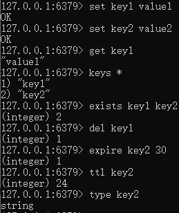
四、基本数据类型
以下仅介绍部分命令不作演示，推荐自行测试
1、String
String是最基本，也是最简单的数据类型
| 命令 | 说明 |
|---|---|
APPEND key value |
如果key存在并且类型为字符串，把value追加到原key值的结尾。 如果key不存在，那么它会先创建一个空字符串的key，再执行追加操作 |
STRLEN key |
返回key的string类型value的长度。如果key的值不是string类型，就返回错误 |
INCR key（注1） |
对key的值执行原子的加1操作。如果指定的key不存在，那么在执行操作之前，会先将它的值设定为0。 如果key中的值不是string类型或者存储的字符串类型不能表示为一个整数 那么执行这个命令时服务器会返回一个错误：(error) ERR value is not an integer or out of range |
DECR key |
对key的值执行原子的减1操作。其它同上 |
INCRBY key increment |
对key的值执行原子的指定值加量操作。其它同上 |
DECRBY key decrement |
对key的值执行原子的指定值减量操作。其它同上 |
GETRANGE key start end |
返回key对应的字符串value由start到end的子串，闭合区间。 可以用负的值来表示从string尾部开始数的下标。所以-1就是最后一个字符。 |
SETRANGE key offset value |
从key指定的offset处开始，用value覆盖 如果offset比当前key对应string还要长，那这个string后面就补0以达到offset的长度 |
SETEX key seconds value |
设置key的字符串value，同时设置在指定的时间(单位：秒)之后失效（set with expire） |
SETNX key value |
如果key不存在，设置key的值为value。 当key存在时，什么也不做（set if not exists） |
MSET key value [key value ...] |
对应给定的keys到他们相应的values上。MSET会用新的value替换已经存在的value 此命令是原子的，所以所有给定的keys是一次性set的（全部改变或者全都不改变） |
MGET key [key ...] |
返回所有指定的key的value。对于不存在的key，返回特殊值nil |
MSETNX key value [key value ...] |
此命令批量设置key的value，同SETNX一样也是原子的 |
GETSET key value |
返回原来key对应的value并设定新value。如果key存在但是对应的value不是字符串，就返回错误 |
注1：
这些命令(增量、减量)仅限于64位的有符号整型数据。由于redis并没有一个明确的类型来表示整型数据，所以这个操作是一个字符串操作。执行这个操作的时候，key对应存储的字符串被解析为10进制的64位有符号整型数据。事实上，Redis 内部采用整数形式来存储对应的整数值，所以对该类字符串值实际上是用整数保存，也就不存在存储整数的字符串表示所带来的额外消耗。
2、List
Redis列表是简单的字符串列表，按照插入顺序排序，基本上就是链表（linked lists）。你可以添加一个元素到列表的头部（左边）或者尾部（右边）
一个列表最多可以包含 2^32 - 1 个元素 (4294967295)。
| 命令 | 说明 |
|---|---|
LPUSH key value [value ...] |
把一个或多个值插入到key的list的左边（头部），对于不存在的key，插入操作前会先创建一个空list |
RPUSH key value [value ...] |
把一个或多个值插入到key的list的右边（尾部），对于不存在的key，插入操作前会先创建一个空list |
LRANGE key start stop |
返回key指定的list从start到stop下标的元素 |
LPOP key |
移除并且返回 key 对应的 list 的第一个元素，不存在时返回 nil |
RPOP key |
移除并且返回 key 对应的 list 的最后一个元素，不存在时返回 nil |
LINDEX key index |
返回key指定位置的元素 |
LLEN key |
返回 key 中list的长度。 如果不存在返回0。 当存储在 key 里的值不是一个list的话，会返回error |
LREM key count value |
从 key 的列表里移除前 count 次出现的值为 value 的元素，key不存在时返回0 count大于0时，从左往右移除；小于0时从右往左移除；等于0时移除所有 |
LTRIM key start stop |
把一个list从start到stop的位置修剪掉，只保留start到stop的元素 |
RPOPLPUSH source destination |
把source的最后一个元素（列表尾部元素）移动到destination的第一个元素前面（列表头部） 如果source不存在，那么会返回nil值，并且不会执行任何操作。 如果destination不存在，那么会新建一个空的destination列表，然后移动 如果source和destination的key相同，那么这个操作等同于移动列表最后一个元素到列表自身的头部位置 |
LSET key index value |
设置列表key中index位置的值为value，当index超出范围时会返回错误 |
LINSERT key BEFORE|AFTER pivot value |
在列表指定值（pivot）的前面或后面（BEFORE|AFTER）插入一个值。pivot不存在时返回-1 |
以上命令的前缀L可以理解为Left，也可以理解为List，R则是right。所有需要位置参数（start、stop、index等）的命令，下标都为0，可以使用负数表示从尾部开始倒数。常用lrange key 0 -1来获取一个list的所有值
3、Set
set是一种不重复且无序的字符串元素的集合
| 命令 | 说明 |
|---|---|
SADD key member [member ...] |
添加一个或多个元素到集合key中，member已存在则忽略，key不存在则新建，key不是集合则报错 |
SMEMBERS key |
返回key集合所有的元素 |
SISMEMBER key member |
判断集合中一个元素是否存在，是返回1，否则返回0 |
SCARD key |
返回集合中元素的数量 |
SREM key member [member ...] |
移除集合中指定的元素（2.4版本后可移除多个） |
SRANDMEMBER key [count] |
随机返回集合中的一个元素。2.6版本后，可以指定一个可选项count，它将随机返回count个 |
SPOP key [count] |
随机移除集合中的一个元素。3.0版本后，可以指定一个可选项count，它将随机移除count个 |
SMOVE source destination member |
将源集合的指定元素移动到目标集合中 |
SDIFF key [key ...] |
返回一个集合与给定集合的差集的元素 |
SINTER key [key ...] |
返回指定所有集合的元素的交集 |
SUNION key [key ...] |
返回指定所有集合的元素的并集 |
4、hash
哈希散列：
Hashes,由field和关联的value组成的map。field和value都是字符串的。这和Ruby、Python的hashes很像
| 命令 | 说明 |
|---|---|
HSET key field value |
设置hash类型的key中指定字段的值 |
HGET key field |
获取hash类型的key中指定字段的值。当字段不存在或者 key 不存在时返回nil |
HMSET key field value [field value ...] |
设置hash类型的key中指定多个字段的值 |
HMGET key field [field ...] |
获取hash类型的key中指定多个字段的值，对于不存在的key或者字段，返回nil |
HGETALL key |
返回 key 指定的哈希集中所有的字段和值。返回值中，每个字段名的下一个是它的值 |
HDEL key field [field ...] |
移除hash类型的key中指定的一个或多个字段，不存在的字段会被忽略，不存在的key会`返回0 |
HLEN key |
返回hash类型的key的字段数量 |
HEXISTS key field |
判断hash里是否存在指定字段，存在字段返回1，不存在字段或key返回0 |
HKEYS key |
返回hash中所有的字段名 |
HVALS key |
返回hash中所有字段的值 |
HINCRBY key field increment |
增加hash中指定字段的数值。如果 key 不存在，会创建一个新的哈希集并与 key 关联。如果字段不存在，则字段的值在该操作执行前被设置为 0 |
HSETNX key field value |
如果hash中指定字段不存在，那么设置字段的值，如果字段存在则忽略。如果key不存在，那么会创建一个新的key并与其关联 |
hash没有HDECRBY的用法，可以通过HINCRBY key field increment中指定负数来减值
5、Zset
有序集合：
zset，也叫Sorted sets，类似Sets，但是每个字符串元素都关联到一个叫score的浮动数值（floating number value）。里面的元素总是通过score进行着排序，所以不同的是，它是可以检索的一系列元素的集合
| 命令 | 说明 |
|---|---|
ZADD key score member [score member ...] |
添加一个或多个指定score值的元素到集合key中，score是一个用于排序的值（注2） |
ZRANGEBYSCORE key min max [WITHSCORES] [LIMIT offset count] |
返回集合中score值在min到max中的元素（包括min和max），按从小到大排序。可以在min或max值前使用(来表示开区间。可选参数WITHSCORES返回元素和其分数。可选的LIMIT参数指定返回结果的数量及区间（类似SQL中SELECT LIMIT offset, count） |
ZREVRANGE key start stop [WITHSCORES] |
返回有序集合中指定区间内的元素。按score值递减(从大到小)来排列。可选参数WITHSCORES返回元素和其分数 |
ZREM key member [member ...] |
移除有序集合中的指定一个或多个元素 |
ZCARD key |
返回有序集合中元素的个数 |
ZCOUNT key min max |
返回有序集合中，score值在min到max之间(包括min和max)的元素个数 |
注2：
Redis 有序集合的score分数值使用双精度64位浮点数。我们支持所有的架构，这表示为一个IEEE 754 floating point number，它能包括的整数范围是-(2^53) 到 +(2^53)。或者说是-9007199254740992 到 9007199254740992。更大的整数在内部用指数形式表示，所以，如果为分数设置一个非常大的整数，你得到的是一个近似的十进制数。+inf和-inf都是有效值，分别表示正无穷和负无穷
五、扩展数据类型
1、Geospatial
地理空间、地理位置。这种数据是基于有序集合实现的：
sorted set使用一种称为Geohash的技术进行填充。经度和纬度的位是交错的，以形成一个独特的52位整数. 我们知道，一个sorted set 的double score可以代表一个52位的整数，而不会失去精度。
这种格式允许半径查询检查的1 + 8个领域需要覆盖整个半径，并丢弃元素以外的半径。通过计算该区域的范围，通过计算所涵盖的范围，从不太重要的部分的排序集的得分，并计算得分范围为每个区域的sorted set中的查询。
| 命令 | 说明 |
|---|---|
GEOADD key longitude latitude member [longitude latitude member ...] |
将指定的一个或多个地理空间位置添加到指定的key中，按经度、纬度、名称的顺序。 经度范围为-180度到180度，纬度范围为-85.05112878度到85.05112878度 |
GEODIST key member1 member2 [unit] |
返回两个指定位置之间的直线距离，指定单位unit可选m、km、mi、ft（米、千米、英里、英尺）之一，默认使用米 |
GEOPOS key member [member ...] |
返回指定的一个或多个元素的位置（经度、纬度） |
GEORADIUS key longitude latitude radius m|km|ft|mi [WITHCOORD] [WITHDIST] [WITHHASH] [COUNT count] |
返回指定经纬度（圆心）。不超过给定范围（半径）所有位置的元素 范围单位可选可选m、km、mi、ft（米、千米、英里、英尺）之一 WITHCOORD选项将范围内元素的经纬度一并返回 WITHDIST选项将范围内元素与圆点的距离一并返回 WITHHASH选项将经纬度经过原始 geohash 编码的有序集合分值（不常用） COUNT指定前N个匹配的元素数量 |
GEORADIUSBYMEMBER key member radius m|km|ft|mi [WITHCOORD] [WITHDIST] [WITHHASH] [COUNT count] |
用法同上，不同的是这个命令指定的是某个位置元素，而不是经纬度 |
GEOHASH key member [member ...] |
返回一个元素位置经纬度的11个字符Geohash字符串，这会丢失一些精度。但精简了表达方式 |
可以使用城市经纬度查询来获取数据，实际使用时有工具类可以导入数据
由于geospatial是使用zset实现的，所以ZREM key member [member ...]可以移除指定的geospatial元素，同理其它zset命令也可以使用
2、HyperLogLog
基数统计（基数，简单理解就是不重复的元素）：
Redis 在 2.8.9 版本添加了 HyperLogLog 结构。它是用来做基数统计的算法，HyperLogLog 的优点是，在输入元素的数量或者体积非常非常大时，计算基数所需的空间总是固定 的、并且是很小的。
在 Redis 里面，每个 HyperLogLog 键只需要花费 12 KB 内存，就可以计算接近 2^64 个不同元素的基数。这和计算基数时，元素越多耗费内存就越多的集合形成鲜明对比。
但是，因为 HyperLogLog 只会根据输入元素来计算基数，而不会储存输入元素本身，所以 HyperLogLog 不能像集合那样，返回输入的各个元素。
此类型的命令就三个：
| 命令 | 说明 |
|---|---|
PFADD key element [element ...] |
将任意数量的元素添加到指定的 HyperLogLog 里面 |
PFCOUNT key [key ...] |
当命令作用于单个键时， 返回储存在给定键的 HyperLogLog 的近似基数， 如果键不存在， 返回 0 。 当命令作用于多个键时， 返回所有给定 HyperLogLog 的并集的近似基数， 这个近似基数是通过将所有给定 HyperLogLog 合并至一个临时 HyperLogLog 来计算得出的。 命令返回的可见集合（observed set）基数并不是精确值， 而是一个带有 0.81% 标准错误（standard error）率的近似值。 |
PFMERGE destkey sourcekey [sourcekey ...] |
将多个HyperLogLog合并为一个HyperLogLog，合并后的HyperLogLog储存在destkey键中，它的基数元素趋近于所有HyperLogLog的集合的并集 |
小插曲：命令中的前缀PF是啥？
PF是Redis为了纪念HyperLogLog这种算法的提出者Philippe Flajolet而命名的。Philippe Flajolet是法国的计算机科学家，有一本著名的书籍《算法分析导论》作者之一就是他
3、Bitmap
此Bitmaps非彼Bitmaps，不是BMP位图图像。
Redis的Bitmaps实际上不是数据类型，而是在字符串类型上定义的一组面向位的操作。由于字符串是二进制安全的数据，其最大长度为512MB，因此它们可以设置为2^32个不同的位（0或1）。
位操作分为两种：恒定时间的单位操作，例如将位设置为1或0，或者获取其值，以及对位组的操作，例如在给定的位范围内计算设定位的数量（例如，人口统计）。
| 命令 | 说明 |
|---|---|
SETBIT key offset value |
对 key 所储存的值，设置或清除指定偏移量上的位(bit)。value只能是0或1 offset必须大于或等于0`，小于 2^32 (bit 映射被限制在 512 MB 之内)。 |
GETBIT key offset |
对 key 所储存的值，获取指定偏移量上的位(bit)。当 offset 比字符串值的长度大，或者 key 不存在时，返回 0 |
BITCOUNT key [start] [end] |
计算指定key中，被设置为1的位数量。可选使用start和end来指定位置范围，可以使用负数表示从尾部倒数 |
六、事务与乐观锁
数据库事务的四大原则：ACID（原子性、一致性、隔离性、持久性）。而Redis中的事务有些不一样，原子性不是完全的；在Redis执行持久化前，数据在内存中，持久性也不是完全的
1、Redis事务
Redis中的事务可以一次执行多个命令，并且有以下重要的保证：
- 事务是一个单独的隔离操作：事务中的所有命令都会序列化、按顺序地执行。
- 事务在执行的过程中，不会被其他客户端发送来的命令请求所打断。
- 事务中任意命令执行失败，其余的命令依然被执行。
需要注意的是，即使一个命令失败，队列中的所有其他命令都会被处理——Redis不会停止对命令的处理。
也就是说，Redis命令的执行是原子性的，但Redis没有在事务上增加任何维持原子性的机制，所以Redis事务的执行并不是原子性的
2、使用事务
MULTI命令开启事务，之后输入的命令将按顺序进入队列（此时并没有执行），运行EXEC按队列里的命令顺序依次执行，使用DISCARD放弃事务，事务队列会被清空， 并且客户端会从事务状态中退出。
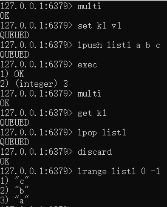
3、事务中的错误
使用事务时可能会遇上以下两种错误：
- 事务在执行
EXEC之前，入队的命令可能会出错。（类似代码编译错误） - 命令可能在执行
EXEC之后失败。（类似程序运行错误）
前者在执行EXEC后，事务被放弃，所有命令都不会执行，而后者，只有错误的命令会报错，其它依旧执行
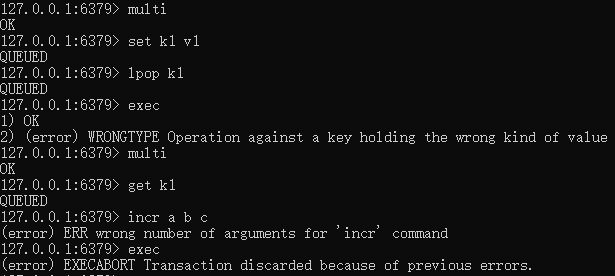
4、乐观锁
从 2.2 版本开始，Redis 可以通过乐观锁（optimistic lock）实现 CAS （check-and-set）操作。简单解释就是，事务开启前监视数据，如果在事务执行时发现这个值相比于监视时有所变化，那这个事务就不会执行。
命令：
WATCH key [key ...]：监视一个或多个 key ，如果在事务执行之前被监视的 key 被改动，那么事务将被打断
UNWATCH：取消所有key的监视（不能单独取消某个key）。如果执行EXEC或者DISCARD， 则不需要手动执行UNWATCH
演示此功能需要开启至少两个Redis客户端，EXEC执行后返回的nil即表示事务已经失效
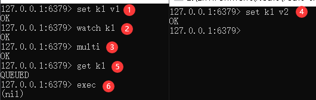
不管事务是否成功执行， 执行EXEC或者DISCARD后对所有键的监视都会被取消，当客户端断开连接时， 该客户端对键的监视也会被取消
七、在Java中使用Redis
1、Jedis
Jedis是Redis官方推荐的 Java 客户端开发包，通过它，我们可以在java中使用Redis
创建一个普通的maven项目，然后引入Jedis的依赖：
1 | <dependency> |
new一个Jedis对象，传入host和端口参数（无参也可以，默认是localhost:6379）。然后就可以通过这个对象使用Redis了
1 | public class TestJedis { |
返回PONG表示已连通。其它所有命令和之前使用redis-cli.exe时完全相同，只是在java里变成了方法而已，这里就不再详解了
使用事务可以像下面这样：
1 | Jedis jedis = new Jedis(); |
2、整合Springboot
Spring Data Redis是更大的Spring Data家族的一部分，它提供了从Spring应用程序对Redis的简单配置和访问。它为与储存的交互提供了低层次和高层次的抽象支持，从而将使用者从基础设施问题中解放出来。
2.1 创建项目&导入依赖
在IDEA中使用Spring Initializr创建springboot项目，勾选需要的依赖，如下
1 | <dependencies> |
通过查询依赖图可以看到，springboot使用的redis客户端并不是上面用到的Jedis，而是lettuce
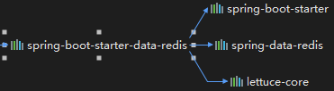
在 Spring Boot 1.x 版本时默认使用的是 jedis ，而在 Spring Boot 2.x 版本默认使用的则是Lettuce了
2.2 Lettuce
Lettuce是一个可伸缩线程安全的Redis客户端。多个线程可以共享同一个RedisConnection。它利用优秀netty NIO框架来高效地管理多个连接。
Netty是一个提供异步的、事件驱动的网络应用程序框架和工具，用以快速开发高性能、高可靠性的网络服务器和客户端程序。
它和Jedis的区别在于：
- Jedis是直连模式，每个线程都去拿自己的Jedis实例，在多个线程间共享一个Jedis实例时是线程不安全的，除非使用连接池。而且当连接数量增多时，资源消耗也会增大，连接成本就很高了。
- Lettuce的连接是基于Netty的，连接实例可以在多个线程间共享。也就是说一个多线程的应用可以使用同一个连接实例，而不用担心并发线程的数量，是线程安全的。
2.3 配置与使用
直接在application文件里配置即可。需要注意有关jedis的设置，不引入相关包的话是不会生效的。
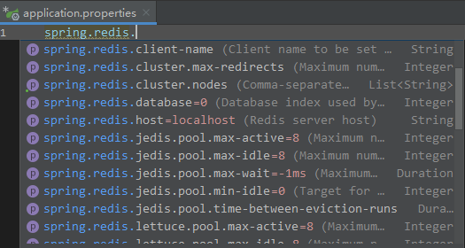
此处按照官方Spring Data Redis的说明。使用测试类，注入RedisTemplate对象，通过该对象来处理redis相关的数据类型
1 |
|
返回PONG，测试成功
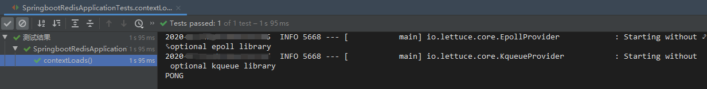
通过opsForX()来操作redis相关数据类型
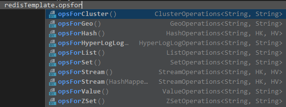
例如：
1 |
|
2.4 简析RedisTemplate
RedisTemplate为执行各种Redis操作、异常转换和序列化提供高级的抽象支持。
模板实际上是Redis模块的中心类，因为它有丰富的特性集。虽然RedisConnection提供了接受和返回二进制值（字节数组）的低级方法，但模板负责序列化和连接管理，从而使用户不必处理这些细节。
通过自动注入的对象，找到RedisAutoConfiguration
1 |
|
这个类做了几件事：
- 启用条件：
RedisOperations接口类存在时（RedisTemplate和StringRedisTemplate实现了此接口） - 开启Redis配置
- 导入Lettuce和Jedis连接配置（Jedis连接配置的启用条件是当Jedis类存在时）
- 创建了两个bean，即上述
RedisOperations接口的两个实现类 - 设置了这两个bean的
redisConnectionFactory
2.5 序列化
从框架的角度来看，Redis中存储的数据只有字节。虽然Redis本身支持各种类型，但在大多数情况下，这些类型指的是数据的存储方式，而不是数据所代表的内容。由用户决定是否将信息转换为字符串或任何其他对象。
思考一个问题，如果在redis里直接储存对象，会发生什么
1 |
|
1 |
|
直接报错，提示说没有序列化
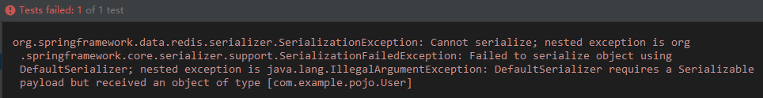
所以在实体类上implements Serializable实现序列化接口试试看
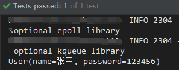
运行后如上，RedisTemplate的get有相应的反序列化设置当然没问题，那么在cmd中呢，如下图，变成了被编码后的字符串，显然这不易读，而且也不符合期望
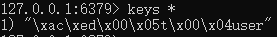
在上面提到的RedisAutoConfiguration类中，继续定位到RedisTemplate，重点看RedisSerializer类型的字段，分别有四个：keySerializer、valueSerializer、hashKeySerializer、hashValueSerializer。
它们均指向了defaultSerializer，而这个默认的序列化，则是JdkSerializationRedisSerializer。通过RedisSerializer接口的实现类发现，它不止jdk序列化一种方式，而是有7种
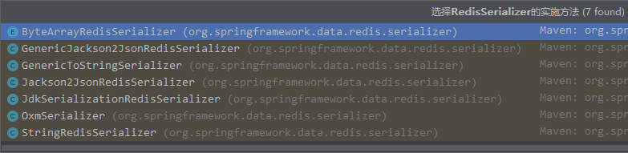
所以接下来自定义RedisTemplate要做的事就是进行序列化的配置
2.6 自定义RedisTemplate
1 |
|
配置如上，代码含义已经写在注释里了，现在直接测试看看
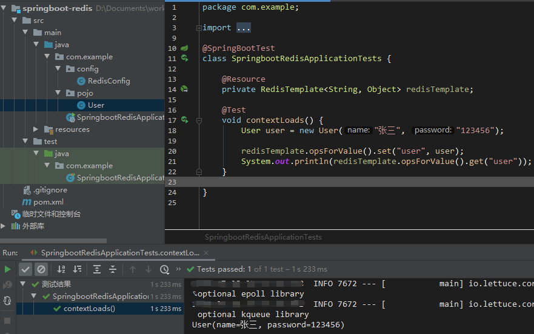
再看cmd，key已经可以正常显示并获取了，\是转义符，类名会按全名保存，中文是被编码为16进制了
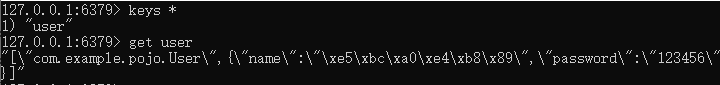
解码后数据显示正常，说明序列化成功了
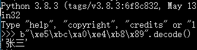